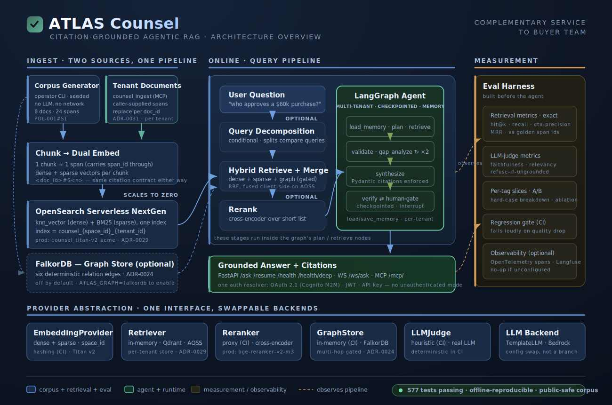
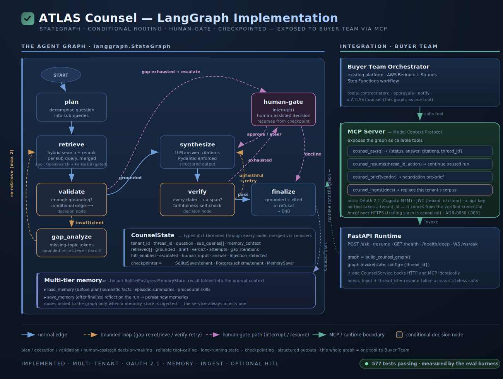
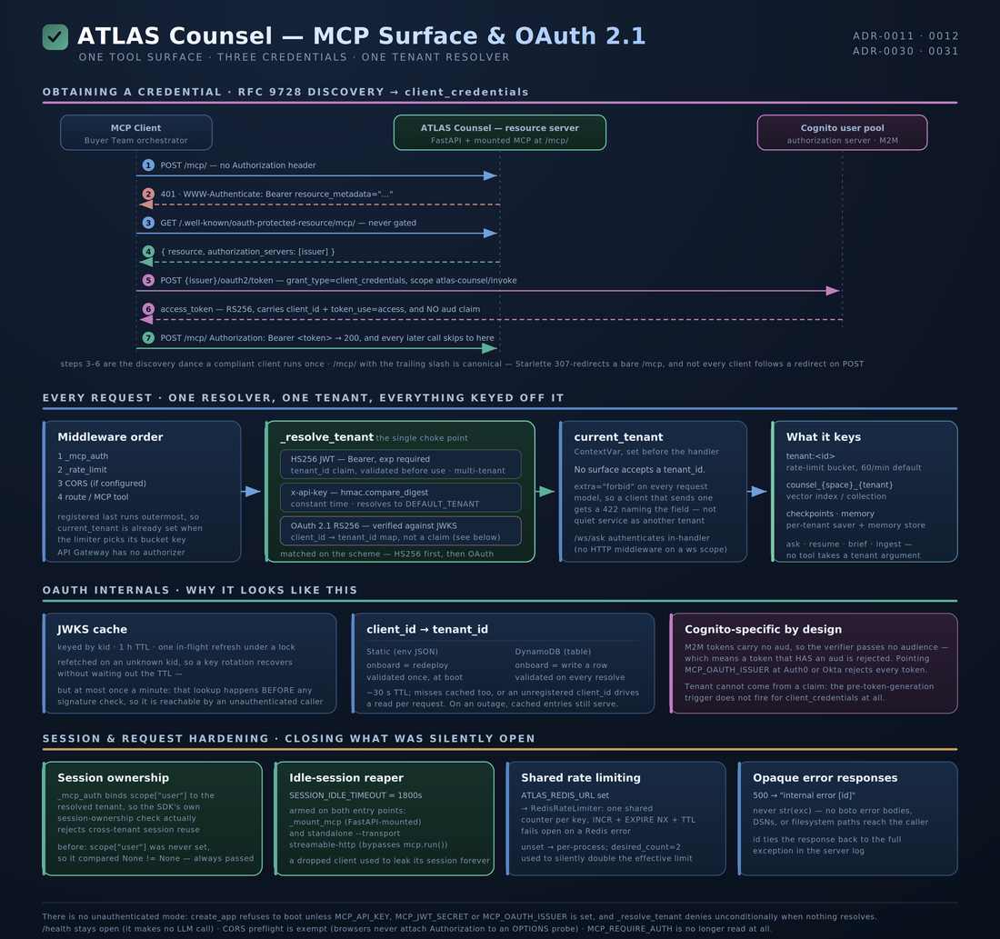
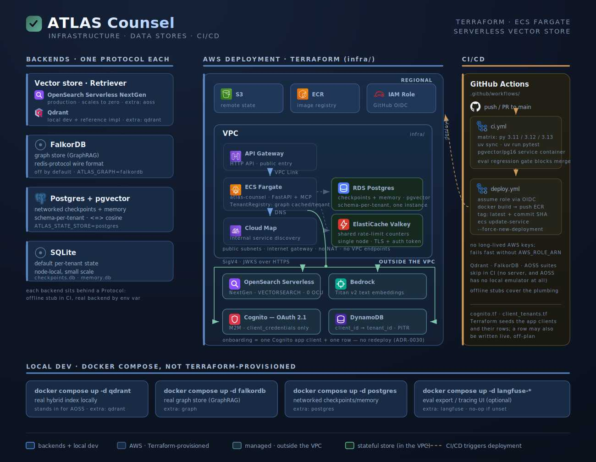

ATLAS Counsel
A citation-first RAG agent that answers procurement-policy and contract questions. Every claim is bound to a retrievable source span by a type contract rather than a prompt request, the agent refuses when the corpus does not cover a question, and it escalates to a human across a stateless HTTP/MCP boundary when it is not sure.
The problem
Most RAG systems treat citation as a courtesy: ask the model to name its sources in the prompt, and hope it complies. That is tolerable for a search assistant. It is not tolerable for a system that answers who approves a $60,000 purchase? and expects a procurement director to act on the answer. A wrong citation there is not a UX blemish — it is an audit finding.
The hard part is that a citation can be wrong and still look right. A model asked to cite its sources will cite something, whether or not that something supports the claim. Prompt-level citation degrades silently: no exception, no log line, just a plausible reference to a document that says something else.
ATLAS Counsel answers procurement-policy and contract questions. It grounds every
claim in a retrievable source span, refuses when the corpus does not cover the
question, and pauses for a human when it is not sure. It runs as a bounded subsystem
with its own stack — a LangGraph StateGraph over a hybrid retriever
(OpenSearch Serverless in production, Qdrant for local dev) with an optional FalkorDB
graph channel for relationships plain similarity cannot see — and is exposed to the
rest of the platform as MCP tools. The orchestrator calls it like any other tool;
neither system knows the other's internals.

Grounding as a type contract, not a prompt
Every span in the corpus carries a stable, human-readable id. POL-001#S1
is, and always will be, the $50,000 single-source-purchase threshold clause. That id
survives chunking, survives embedding, and appears in every retrieval result, so a
chunk is always traceable back to a specific sentence in a specific document.
Citation is then a required field rather than a prompt request. A claim without a
span_id fails model validation and never becomes an answer. A separate
verification step independently re-checks each claim's span against the spans
actually retrieved for that question — so a claim citing an untouched span fails even
if synthesis asserted it was faithful.
The checkpoint was tested with a deliberately hallucinating stub model that always cites a span it never retrieved. The graph catches it every time, retries up to the cap, and escalates to the human gate rather than shipping a fabricated citation. Reliability here is not a matter of prompt wording; it is the type system plus a control-flow guarantee that holds whether or not the model behaves.
Why a retrieval score cannot drive refusal
The obvious refusal heuristic — decline when the top retrieval score is low — scored a flat 0.0 on refusal accuracy the moment the eval harness ran.
The reason is worth keeping. Reciprocal Rank Fusion scores are rank-based, not absolute: the top hit scores roughly 1/(k+1) whether it is a perfect match or merely the least-bad candidate in the set. On a planted unanswerable question, retrieval scored 0.0325 against 0.0328 for questions with a clear answer. No threshold on a fused score can separate those.
Refusal was rebuilt around lexical grounding overlap — does the question's distinctive content actually appear in the retrieved spans — and refusal accuracy went to 1.0. The lesson generalises past this system: before thresholding a score, check whether the score means anything in absolute terms.
Bounded room to try harder
Counsel's control flow is cyclic by necessity. The agent re-checks its draft against the evidence and retries when a claim is unsupported; when the first retrieval pass comes up short it tries a second, narrower one before giving up. A chain models that awkwardly at best, which is why the graph is a first-class object rather than a sequence of calls.

Two properties carry the reliability story. Gap-aware retrieval does not escalate on the first miss: when validation finds the retrieved spans insufficient, the agent asks which of the question's content tokens are still uncovered, issues those as follow-up queries, and merges the results into — rather than replacing — the existing set, so coverage accumulates across iterations. And every loop is capped. Once the caps are exhausted the graph falls through to the human gate rather than spinning. An unbounded verify-and-retry loop is a production incident with a UUID.
A genuinely unanswerable question still escalates — just after exhausting cheap self-help first, which is the difference between a system that tries and one that guesses.
A pause that survives a stateless protocol
Escalating to a human is easy to draw on a whiteboard. It is a real integration problem when the agent is called over HTTP and MCP — both strictly request/response — and the human might not respond for hours. A pause cannot hold a socket open while a procurement director is at lunch, and it should not have to: the run might resume from a different process entirely.
So the pause is a normal result rather than a special case the caller has to detect.
A run that hits the gate returns needs_input plus a thread id that acts
as an opaque resume token. A later, entirely independent resume call carries the
human's decision, and the checkpointer reconstitutes the run state and continues where
it stopped. Both transports are thin wrappers over one shared service object, with a
test asserting they return identical results for identical inputs — which is what
makes the MCP tool behave exactly like the HTTP endpoint without a compatibility
matrix to maintain.
The gate surfaced a bug worth recounting. When a human steered an initially-ungrounded
question toward a specific document, the final step still refused: the original
automated grounded=False verdict was stale and silently outranked the
human's override. The fix was not a patch but a precedence rule — a human steer always
wins over the automated grounding decision. Human-in-the-loop is easy to diagram; the
precedence semantics between what the model decided and what the human just said are
where it gets real.
Identity is derived, never asserted
One rule is load-bearing and has survived every revision: tools never take a
tenant_id argument. Identity is derived from a verified credential, so a
caller cannot simply assert a different tenant the way it could with a plain request
parameter. Request models forbid extra fields, so a client that sends one gets a 422
naming the field rather than being served as whatever its credential maps to.

Version 2 moved the rest of the security posture from configuration into structure. The service cannot boot without a credential — the flag that could relax it was deleted rather than defaulted. Every authenticated surface resolves tenancy through one function, so a new endpoint cannot grow a weaker rule of its own. Rate limits key on the authenticated tenant rather than the client address, so customers sharing an egress IP cannot exhaust each other's budget. Each tenant is answered only from the corpus it ingested.
The distinction that matters: a security property holding because an environment variable is set correctly is a security property with a failure mode. Each of these is now enforced by a construct with no way to express the unsafe case — which is the difference between running a pilot and opening the door.
None of that posture is hand-rolled here any more. Counsel's MCP server runs on
scalable_mcp — the auth resolution, the
per-tenant rate limiting, the session lifecycle and the sealed pause/resume
convention all come from the base package. That base was extracted from this server
in the first place, and then folded back rather than forked, so there is one
implementation of these rules and Counsel is its first consumer. Adopting it also
brought protocol currency for free: the same endpoint serves clients on both sides of
the 2026-07-28 transport change, so nothing in the field had to move.
What it runs on
An ECS Fargate service behind an HTTP API Gateway, with Postgres holding schema-per-tenant checkpoints and Valkey holding the shared rate-limit counters. Everything stateful that can be managed is managed and sits outside the VPC, reached over TLS rather than through private endpoints — which keeps the network simple enough to reason about and takes NAT off the bill.

The property worth calling out is the onboarding cost. Adding a customer is one Cognito app client and one DynamoDB row; nothing per-tenant lives in the Terraform, so there is no redeploy and no plan to review. A row can also be written live, off-plan, which is what makes onboarding an API call rather than an engineering task.
What it is not
The corpus is deliberately small and fully synthetic: eight documents, twenty-four citable spans, eight golden question/answer items, and four planted hard cases designed to break a naive implementation — a cross-document contradiction, a near-duplicate threshold that tests reranker precision, an unanswerable question with no supporting span, and a purchase split into smaller pieces to test policy reasoning rather than lookup.
That is a limitation and also the point. The corpus is template-driven with no model calls and no network, so it produces byte-identical output for the same inputs. That determinism is what makes the evaluation numbers comparable run over run, and what keeps the repository safe to publish. Numbers from a corpus that changes underneath you are not measurements.
Further reading
- Building ATLAS Counsel: grounding, escalation, and safety in a citation-first RAG agent — the full write-up
- ATLAS Counsel MCP v2: an OAuth resource server built for broad exposure
- No users table: the OAuth 2.0 resource server pattern, adapted
- scalable-mcp — the server base extracted from this work